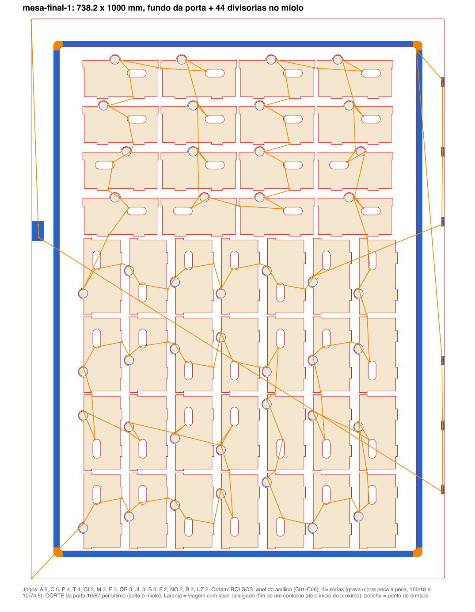

A máquina
eCNC L-1210
Laser CO2 de fabricação nacional (Garça, SP), controladora Trocen, mesa de 1150 x 1000 mm. Os arquivos saem do LightBurn pelo Mac: Enviar no computador, Start no painel da máquina.Material
MDF de 3 mm em quase tudo, montado em lâmina dupla nas paredes. Acrílico de 1,5 mm no miolo da porta.O gerador paramétrico
Nenhuma coordenada é desenhada à mão.
- Especificação. Cada módulo e cada peça mora em
specs/modulos.json: dimensões externas, espessura, juntas, aberturas, e para cada vão de componente o nome e a fonte da medida. - Geração. O
gerador.pymonta as seis faces de cada caixa com a matriz de dedos do TabbedBoxMaker, recorta as aberturas e empacota as peças em cargas de no máximo 1000 x 1000 mm. - Validação. Antes de exportar, confere ponte mínima entre furos e bordas (piso de 1,5 mm, exceções declaradas), peças sobrepostas e peça maior que a mesa. Arquivo que não passa é rascunho.
- Prévia. Para cada carga sai um PDF em escala 1:1. Imprimir em 100% e pôr o componente em cima confere o vão sem paquímetro.
- Entrega. DXF com a camada de corte e a de marcação separadas, em UTF-8, com o canto inferior esquerdo em (0, 0) e sem moldura, e o projeto do LightBurn já configurado com as camadas e os parâmetros.
Corrigir uma cota é trocar um número no JSON e rodar de novo. O repositório tem testes que regeram tudo e conferem as peças críticas.
Parâmetros medidos, não chutados
A tabela colada na máquina foi o ponto de partida. A máquina rendeu abaixo dela em tudo.
| Uso | Tabela do fabricante | Usado e por quê |
|---|---|---|
| Corte, MDF 3 mm | 26 mm/s, 65% | 10 mm/s, 74,5%. Matrizes cortadas em 27 e 28/10 levaram a 12/57; peças grandes não atravessaram e passaram a 10/67, depois 10/72, e o Josh fixou 10/74,5 em 03/11. |
| Linha gravada (rótulos, contornos) | 100 mm/s, 18% | 100/18, confirmado. |
| Rebaixo (bolso de dobradiça, berços) | sem valor | Fill a 150 mm/s, 80%, o quadrado da matriz de gravação que deu a profundidade certa. |
| Corte, acrílico 1,5 mm | 30/50 (para 2 mm) | 30/50 não atravessou; reaberto a 15/60. |
| Gravação de superfície (placa) | 320/26 | número da tabela, ainda não medido nesta máquina. |
As matrizes de calibração são uma chapa com quadrados de corte e de gravação lado a lado, cada um rotulado com velocidade e potência. A de 27/10 (4 a 12 mm/s, 75 a 95%) cortou todos os quadrados; a de 28/10 (10 a 30 mm/s, 45 a 75%), nenhum.
Teste antes da peça
Toda feição que encosta num componente real passa por um cupom num retalho.
| Cupom | O que variou | Resultado |
|---|---|---|
| Fechadura | corpo e batente contra a peça real | medidas da DFRobot FIT0620 batem; batente real tem 1,6 mm de espessura e furos de 4,4. Encaixou na primeira. |
| Botão da porta | régua de furos de 9,7 a 11,4 e de rebaixos de 10,5 a 13,10 | furo de 10,1 e rebaixo de 13,05 em duas passadas. |
| Dobradiça borboleta | régua de folgas | folga de 0,20 mm venceu. |
| Interface do biométrico | um retalho por componente, com o nome gravado | teclado, LCD e LED aprovados; o leitor de digital exigiu três tentativas e terminou colado. |
Rota de corte
Menos tempo com o laser desligado andando pela mesa.
Desde 04/11/2026 a ordem das peças é calculada: vizinho mais próximo, depois trocas 2-opt e Or-opt sobre a distância real entre o fim de um contorno e o início do próximo. Cada contorno começa no vértice mais perto de onde o anterior terminou. Dentro de uma peça, primeiro a marcação, depois os furos, e o contorno por último, porque é ele que solta a peça. O otimizador do LightBurn fica desligado no arquivo para não desfazer a ordem.
Antes e depois
Mesa das gavetas: de 21,5 m para 7,7 m de deslocamento desligado. Mesa da porta com divisórias: de 12,9 m para 8,8 m.Tempo real
Uma mesa de 37,5 m de corte a 10 mm/s dava 62,8 min no papel e levou 70 min na máquina. Desde então, tempo real = teórico x 1,115.
O que custou chapa
- Leitor de digital em vão calculado pelo manual: batentes e garfo não seguraram o corpo real. Solução final por cola quente.
- Corte do acrílico pela tabela de 2 mm: não atravessou.
- Peças grandes do armário a 12/57: não atravessaram, subiu para 10/67.
- Peça de 1000 mm empacotada junto de outras numa mesa de 1000: estourou a mesa. Desde então, peça de 1000 vai sozinha.
- DXF com acentos em codificação errada: a camada de marcação chegou corrompida no LightBurn. O escritor passou a gravar em UTF-8.
Cada um desses erros virou regra no gerador ou um teste automático, para não se repetir.